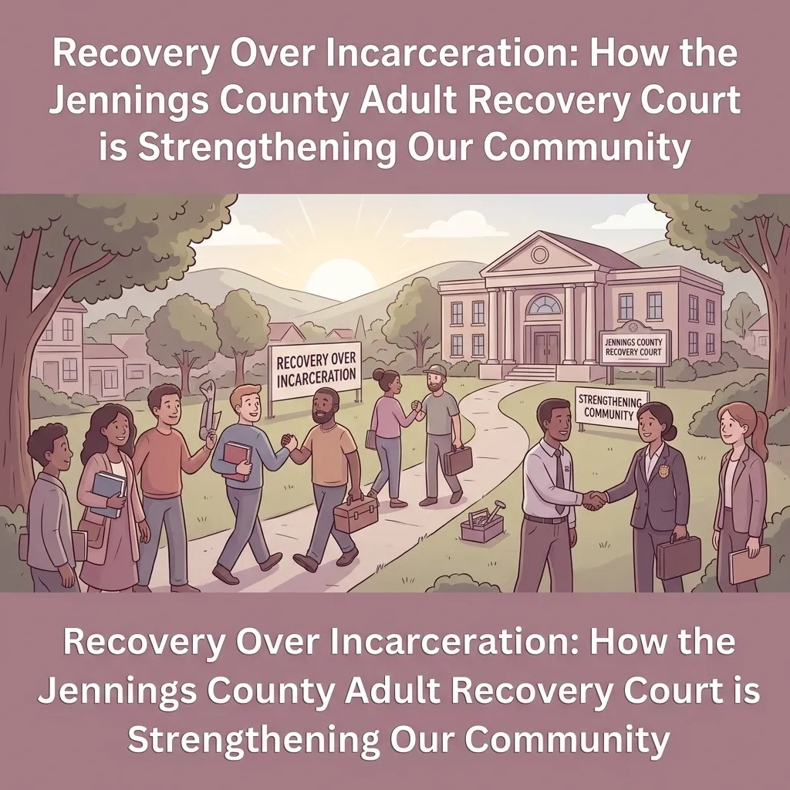
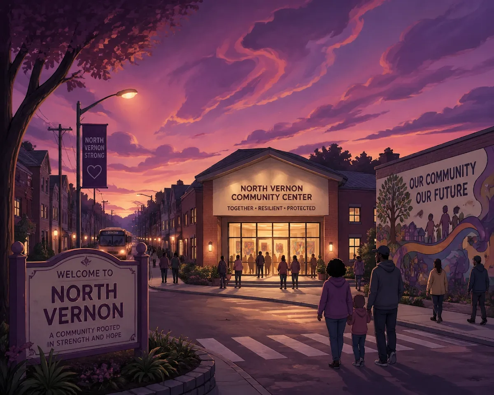
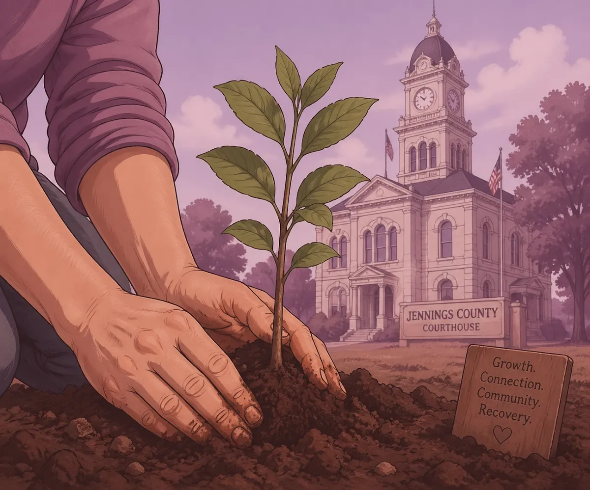

Recovery Over Incarceration: How the Jennings County Adult Recovery Court is Strengthening Our Community

If you live in North Vernon or anywhere in Jennings County, you probably know that our community has faced some tough times with drug issues. For a long time, the only answer the legal system had was to put people in jail. But as we've seen over the years, jail doesn't always solve the root of the problem. Often, it just starts a cycle where someone goes in, comes out, and ends up right back where they started.
That is why the Jennings County Adult Recovery Court is such a big deal. It is a special kind of court, often called a "Drug Court", that looks at things differently. Instead of just focusing on punishment, it focuses on recovery. It is about helping people get their lives back on track so they can be good parents, workers, and neighbors again.
At Chris Doran Law LLC, I see how these issues affect real families every day. Whether you are in Vernon, Commiskey, or Hayden, these problems touch everyone. I believe in helping people find the best path forward. Sometimes, that path is through the Adult Recovery Court.
What Exactly is the Adult Recovery Court?
You might hear people call it a "problem-solving court." That sounds like a fancy legal term, but it is actually very simple. It means the court tries to solve the problem that caused the crime in the first place. For many people in our area, that problem is an addiction to drugs or alcohol.
The Jennings County Adult Recovery Court is designed for people who are at a high risk of going back to jail but have a high need for treatment. It isn't an "easy way out." In fact, many people say it is much harder than just serving time in jail. It requires a lot of hard work, honesty, and showing up.
In this program, you don't just see a judge once and get a sentence. You become part of a team. This team includes the judge, a coordinator, treatment providers, and even lawyers like me. We all work together to help you stay sober and stay out of trouble.
Shifting from Punishment to Treatment
In the past, the system was built on a "one size fits all" model. If you broke the law, you went to jail. But we've learned that for people struggling with substance use, jail doesn't treat the addiction. As soon as they get out, the same triggers and cravings are still there.
The Adult Recovery Court changes the focus. It treats addiction like the health issue it is. Instead of sitting in a cell in Vernon, participants are out in the community, going to therapy, attending meetings, and taking drug tests.
This shift is important because it looks at the long-term. If we can help someone get clean and stay clean, they are much less likely to break the law again. This is what we call "recidivism reduction." It is a big word that just means keeping people from going back to jail. When we reduce recidivism, our whole community in Jennings County gets safer.
How the Program Works
The program is very structured. You can't just say you want to be sober; you have to prove it every single day. Usually, the program is broken down into phases.
The First Phase. This is the most intense. You have to go to court every week. You will have frequent drug tests and lots of therapy sessions. The goal is to get stable.
Moving Forward. As you do well, things change. You might go to court less often, but you still have to follow all the rules. You start looking at things like finding a job or going back to school.
Staying the Course. In the later phases, the focus is on keeping your life steady. You learn how to handle stress without turning back to old habits.
Throughout all of this, the court uses "carrots and sticks." If you do well, you might get a reward, like a gift card or a shout-out in court. If you mess up, there are consequences, like extra community service or a short stay in jail. The goal isn't to be mean; it's to keep you on the right path.
Why This Matters for Jennings County
You might wonder, "Why should I care about this if I don't have a drug problem?" The truth is, the Adult Recovery Court benefits everyone in Scipio, Hayden, and all across our county.
It Saves Taxpayer Money. Jailing someone is expensive. We have to pay for their food, their bed, and their medical care while they are locked up. Treatment through the Recovery Court is often much cheaper than long-term incarceration. When people graduate from the program, they start working and paying taxes instead of costing the taxpayers money.

It Keeps Families Together. When a parent goes to jail, the children suffer. Often, those kids end up in the foster care system, which is another big cost and a huge heartbreak. The Recovery Court helps parents get healthy so they can take care of their kids. This creates a better future for the next generation of Jennings County residents.
It Makes Our Streets Safer. Most "crimes of habit," like petty theft or burglary, are committed by people trying to fund an addiction. If we treat the addiction, those crimes stop happening. People who go through Drug Court are much less likely to commit new crimes than those who just go to prison.
Looking at the Context of 2026
It is now 2026, and the landscape of drug use has changed even since a few years ago. We are seeing new challenges with things like fentanyl. If you want to know more about how the laws have changed recently, you can read my post on facing drug charges and the 2025 fentanyl laws.
Because the drugs are getting more dangerous, the Recovery Court is more important than ever. It provides the high level of supervision needed to keep people alive and help them recover. In a small town like North Vernon, we can't afford to keep losing our neighbors to these issues.

A Local Lawyer Who Listens
I've spent my career working on complex legal matters right here in Jennings County. I consider myself a "small town lawyer," and I wear many hats. I don't just look at a case file; I look at the person behind it.
When you come into my office, I listen to what you have to say. I want to know your story. I give you options and help you understand the Jennings County Court system. If you are facing charges and think the Adult Recovery Court might be right for you, we can talk about how to make that happen.
I believe in collaborative problem-solving. My job isn't just to talk for you in court; it's to help you solve your legal needs so you can get back to your life. I am honest about the process, including things like how to check your case status and what to expect during hearings.
Is the Recovery Court Right for You?
Not everyone is a fit for the program. It is specifically for people who are truly struggling with addiction and are ready to make a change. If you are just looking for a way to avoid jail without doing the work, this program isn't for you. But if you are tired of the cycle and want a real chance at a new life, it could be the best thing that ever happened to you.
The court works with people from all walks of life. Whether you were pulled over in North Vernon and are worried about field sobriety tests or you are dealing with more serious felony charges, it is worth looking into your options.
How to Get Started
If you or someone you love is struggling and facing legal trouble in Jennings County, don't wait. The legal system moves fast, but there are people here to help. You can learn more about looking for a lawyer in North Vernon or reach out to me directly.
My office is built on being approachable and helpful. I'm not here to judge you; I'm here to help you find a way through. We can sit down, go over the facts, and see if the Jennings County Adult Recovery Court is the right path for your situation.
We serve all of Jennings County, from the courthouse in Vernon to the quiet roads of Commiskey. I don't charge hidden fees for local travel, and I believe in being upfront about everything we do.
Final Thoughts
The Jennings County Adult Recovery Court is a shining example of how we can do things better. It shows that our community cares about its people. It proves that recovery is possible, even when things seem at their worst.
By choosing recovery over incarceration, we aren't just helping individuals, we are strengthening the very fabric of North Vernon and the surrounding areas. We are making our homes safer and our future brighter.
You can also learn more about my experience and approach on my About Me page. You can always find more information on my blog about various local legal topics, from custody hearings to eviction notices. Whatever you are facing, you don't have to face it alone.
Chris Doran Law LLC is here for Jennings County. Let's start the conversation today.